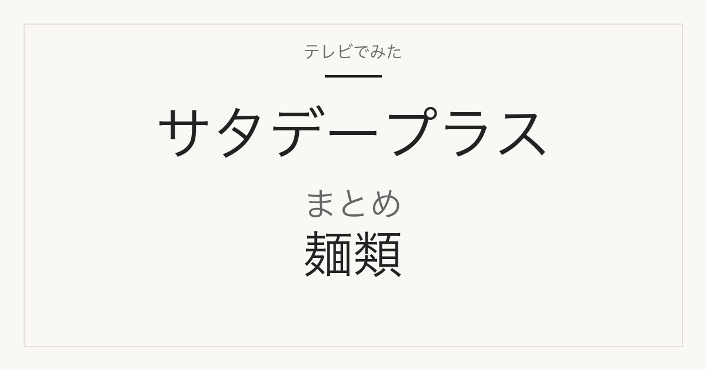

カテゴリまとめ
サタプラで紹介された麺類まとめ
そうめん（7月18日）と冷やし中華（8月1日）の2回・計10品を、放送回ごとの順位を保ったまま用途と購入条件で見比べる

対象はMBS「サタデープラス」の「ひたすら試してランキング」で麺類が取り上げられた2回、2026年7月18日放送のそうめん（5品）と2026年8月1日放送の冷やし中華（5品）の計10品です。順位・商品名・番組掲載価格はMBS公式ページ（2026-09-09に現存を確認）によるもので、そうめんと冷やし中華は別の放送回・別の調査項目のため、2回の順位を混ぜた総合順位は作りません。乾麺そうめんを扱った他番組（マツコの知らない世界など）やサタプラの他ジャンルは含みません。
各回の順位は番組独自の調査によるもので、放送回が異なる商品の順位を混ぜて当サイト独自のランキングにはしていません。番組掲載価格は各放送時点の番組調べです。
放送日・テーマ・各回の1位
用途・仕様で比べる
麺のタイプと保存方法
そうめん回は5品とも商品名が「手延素麺・手延べそうめん・三輪素麺・手延半田めん」の乾麺で、常温で保存できる麺です。冷やし中華回は冷蔵の生麺タイプが中心で、通販ではクール便になります。タイプは番組公式の商品名と既存記事・楽天商品ページの表記から判断し、確認できない商品は未確認としています。
| 商品 | 放送回 | 麺のタイプと保存方法 |
|---|---|---|
| 葵フーズ JAひまわり 愛知県産小麦きぬあかり使用 島原手延素麺 | 7月18日 そうめん | 手延べ乾麺・常温 |
| 兵庫県手延素麺協同組合 手延べそうめん 揖保乃糸 特級品 300g | 7月18日 そうめん | 手延べ乾麺・常温（「特級品」。同ブランドの「上級品」とは別の等級） |
| 巽製粉 麦坐 三輪素麺「国産原料限定使用」 | 7月18日 そうめん | 乾麺（三輪素麺）・常温 |
| 小野製麺 手延半田めん | 7月18日 そうめん | 手延べ乾麺（半田めん）・常温 |
| ドン・キホーテ 情熱価格 島原手延べそうめん 1kg | 7月18日 そうめん | 手延べ乾麺・常温 |
| さぬき麺心 冷やし中華 うめねえちゃん 1食用スープ付 | 8月1日 冷やし中華 | スープ付の1食用。麺のタイプ・保存方法は未確認 |
| 菊水 サッポロ冷し中華 レモン風味醤油だれ 2人前 | 8月1日 冷やし中華 | 冷蔵 |
| 日清食品チルド 行列のできる店のラーメン 冷し中華 2人前 | 8月1日 冷やし中華 | 冷蔵（チルド麺） |
| 東洋水産 マルちゃんの冷し生ラーメン 3人前 | 8月1日 冷やし中華 | 冷蔵 |
| シマダヤ 「本生」 冷し中華 醤油味 3食 | 8月1日 冷やし中華 | 冷蔵 |
番組掲載価格と換算価格
番組掲載価格は各放送日時点の番組調べ（そうめん=2026年7月18日、冷やし中華=2026年8月1日）。換算価格はそうめんが100gあたり、冷やし中華が1食あたりで、既存記事が番組掲載価格と商品名の内容量から算出したものだけを載せています。商品名に内容量のない商品は未確認です。単位が違うため2回の換算価格を直接比べることはできません。
| 商品 | 放送回 | 番組掲載価格と換算価格 |
|---|---|---|
| 葵フーズ JAひまわり 愛知県産小麦きぬあかり使用 島原手延素麺 | 7月18日 そうめん | 350円／100gあたり未確認（番組表記に内容量なし） |
| 兵庫県手延素麺協同組合 手延べそうめん 揖保乃糸 特級品 300g | 7月18日 そうめん | 867円（300g）／100gあたり約289円 |
| 巽製粉 麦坐 三輪素麺「国産原料限定使用」 | 7月18日 そうめん | 359円／100gあたり未確認（番組表記に内容量なし） |
| 小野製麺 手延半田めん | 7月18日 そうめん | 413円／100gあたり未確認（番組表記に内容量なし） |
| ドン・キホーテ 情熱価格 島原手延べそうめん 1kg | 7月18日 そうめん | 863円（1kg）／100gあたり約86円 |
| さぬき麺心 冷やし中華 うめねえちゃん 1食用スープ付 | 8月1日 冷やし中華 | 127円（1食）／1食あたり127円 |
| 菊水 サッポロ冷し中華 レモン風味醤油だれ 2人前 | 8月1日 冷やし中華 | 328円（2人前）／1食あたり約164円 |
| 日清食品チルド 行列のできる店のラーメン 冷し中華 2人前 | 8月1日 冷やし中華 | 648円（2人前）／1食あたり約324円 |
| 東洋水産 マルちゃんの冷し生ラーメン 3人前 | 8月1日 冷やし中華 | 424円（3人前）／1食あたり約141円 |
| シマダヤ 「本生」 冷し中華 醤油味 3食 | 8月1日 冷やし中華 | 467円（3食）／1食あたり約156円 |
番組の調査項目（回ごと）
2回で調査項目が異なるため、順位の意味も回ごとに違います。そうめん回はゆで時間とアレンジ力、冷やし中華回はタレの味と具材との相性が入っています。どちらもコストパフォーマンスが項目に含まれるため、上位が最安とは限りません。
| 商品 | 放送回 | 番組の調査項目（回ごと） |
|---|---|---|
| そうめん5品（共通） | 7月18日 そうめん | ①ゆで時間 ②麺の味 ③めんつゆとの相性 ④コストパフォーマンス ⑤アレンジ力 |
| 冷やし中華5品（共通） | 8月1日 冷やし中華 | ①麺の味 ②タレの味 ③具材との相性 ④コストパフォーマンス ⑤全体の味 |
購入先と通販での販売単位
販売先の種類は既存記事の区分（メーカー商品／プライベートブランド）。通販の販売単位は楽天市場の商品ページを開いてタイトルを確認した結果で、番組掲載と単位が違う商品はセット販売のみでした。現在の価格・在庫は確認していません。
| 商品 | 放送回 | 購入先と通販での販売単位 |
|---|---|---|
| 葵フーズ JAひまわり 愛知県産小麦きぬあかり使用 島原手延素麺 | 7月18日 そうめん | 楽天で見つかった「手延そうめん 100g×3束入り」は販売ページ自身が旧商品（JAひまわり 島原手延べそうめん400g）の後継と記載しており、番組掲載品（350円）と同一かは確認できません。楽天での同一商品は未確認（2026-09-09時点）。 |
| 兵庫県手延素麺協同組合 手延べそうめん 揖保乃糸 特級品 300g | 7月18日 そうめん | メーカー商品。楽天は特約店直営の300g×8包セットのみ（番組の300g単品と単位が違う） |
| 巽製粉 麦坐 三輪素麺「国産原料限定使用」 | 7月18日 そうめん | メーカー商品。楽天で250g単品を確認 |
| 小野製麺 手延半田めん | 7月18日 そうめん | メーカー商品。楽天で300g単品を確認（既存記事には未掲載） |
| ドン・キホーテ 情熱価格 島原手延べそうめん 1kg | 7月18日 そうめん | ドン・キホーテのプライベートブランド。店舗・自社通販のほか楽天でも1kg×1個を確認 |
| さぬき麺心 冷やし中華 うめねえちゃん 1食用スープ付 | 8月1日 冷やし中華 | メーカー商品。楽天は5食入・10袋入のセットのみ（番組の1食単品は無し） |
| 菊水 サッポロ冷し中華 レモン風味醤油だれ 2人前 | 8月1日 冷やし中華 | メーカー商品。楽天で320g×1袋（2人前）を確認。冷蔵便 |
| 日清食品チルド 行列のできる店のラーメン 冷し中華 2人前 | 8月1日 冷やし中華 | メーカー商品。楽天は2人前×2袋セットのみ（番組の1袋と単位が違う）。冷蔵便 |
| 東洋水産 マルちゃんの冷し生ラーメン 3人前 | 8月1日 冷やし中華 | メーカー商品。楽天で3人前を確認（既存記事には未掲載）。冷蔵便 |
| シマダヤ 「本生」 冷し中華 醤油味 3食 | 8月1日 冷やし中華 | メーカー商品。楽天は500g×1袋表記（番組は3食表記、同一品）。冷蔵便 |
出典・更新日時
- MBS サタプラ ひたすら試してランキング そうめん（2026年7月18日放送・2026-09-09確認）
- MBS サタプラ ひたすら試してランキング 冷やし中華（2026年8月1日放送・2026-09-09確認）
- 当サイト サタプラ そうめんランキング｜2026年7月18日
- 当サイト サタプラ 冷やし中華ランキング｜2026年8月1日
- 揖保乃糸ホームページ（兵庫県手延素麺協同組合・特級品と上級品の等級を確認）
- 楽天市場 葵フーズ JAひまわり きぬあかり 手延そうめん 100g×3束（Macaron）
- 楽天市場 揖保乃糸 特級品 300g×8包（揖保乃糸特約店直営）
- 楽天市場 巽製粉 麦坐 三輪素麺 国産小麦 250g（にっぽん津々浦々）
- 楽天市場 小野製麺 手延半田めん 300g（プロフーズ）
- 楽天市場 ドンキホーテ 島原手延素麺 1kg×1個（Macaron）
- 楽天市場 さぬき麺心 うめねえちゃん 100g×10袋（okawa-shop）
- 楽天市場 菊水 サッポロ冷し中華 レモン風味醤油だれ 320g×1袋（Macaron）
- 楽天市場 日清食品チルド 行列のできる店のラーメン 冷し中華 2人前×2袋（smilespoon）
- 楽天市場 東洋水産 マルちゃんの冷し生ラーメン 3人前（Macaron）
- 楽天市場 シマダヤ 本生 冷し中華 醤油味 500g×1袋（Macaron）
公開：2026年9月9日／最終更新：2026年9月9日